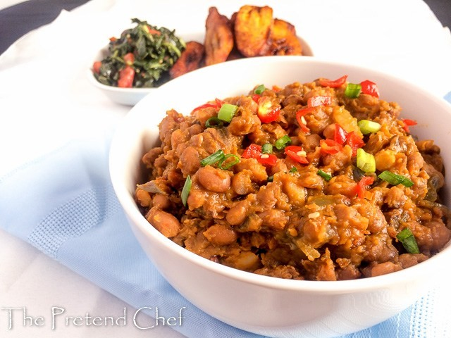

Odin Recipes
Ewa Riro - Stewed Beans

Ewa riro, which is also referred to as beans porridge or stewed beans, is a Nigerian delicacy
from the Yoruba-speaking part of the country. It is made by boiling beans until it's tender,
then we stew it up. Yes, it's that easy. “Ewa” means “Beans” and “Riro” means “stirred”
so “Ewa riro” literally means “stirred Beans” but this time around it's beans stirred in
a type of stew or simply put “stewed Beans”
Blackeyed peas are an important source of protein and fiber in Nigeria, and we've got a lot of Beans recipes like
Ingredients
- Black-eyed peas ‐ Though these are referred to as peas, but they are actually beans in the real sense, and we know and refer to them as beans in Nigeria. The Honey beans can also be used in place of black-eyed peas.
- Bell peppers and scotch bonnet ‐ This is what makes our stew for the beans.
- Onion ‐ An essential aromatic that boosts the flavor of the beans. You can use any variety - white, yellow, or red.
- Habanero Rodo ‐ Add heat to the sauce.
- Scotch bonnet ‐ Habanero peppers
- Salt ‐ For flavor. Use to taste.
- Bouillon Powder ‐Great for boosting the flavor of the dish. I used chicken bouillon.
- Palm Oil ‐ Traditionally, palm oil is used for this recipe, and I wouldn't exchange that for any other oil.
- Smoked Turkey, Crayfish, or dried shrimp ‐ Gives this dish a deeper depth of flavo
- Salt: to taste
Steps
- Pick (sort) the Beans and rinse: To prepare this delicacy, it's important to start with clean Beans. Try as much as possible to This is so important because chewing on stones or debris while eating is not a pleasant experience at all. Rinse out the Beans a couple of times and drain.
- Cook the beans: Pour the beans into a large pot. Add the peppers, onion, and smoked turkey wings. Cook until the Beans is very tender. This should take about 1 hour to 1 hour to 1 hour and 15 minutes. It will even cook faster if you use a pressure pot. The crockpot also works well.
-
Stew and season the beans: Once the Beans are well cooked and soft, remove the peppers, onion, and turkey from the beans. Blend the peppers and add them back to the beans. Debone the turkey wing and cut it into bits and return that also to the beans. Add the salt, crayfish, seasoning powder, and palm oil. Stir well. Cover it up and leave it to simmer for about 3 to 5 minutes, and your beans porridge is ready!